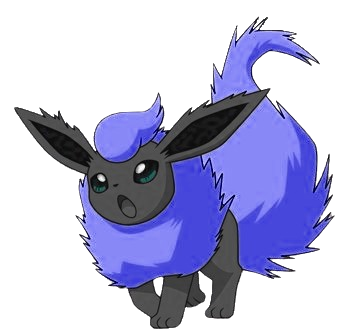

Eevee is a brown fox-like creature. It's most recognizable feature is it's light butter colored for around it's neck and the end of it's tail. Eevee is the most common one to be found out in the wild.
Forms
Eevee has multiple forms:
| Spirit Eevee
| Shiny Eevee
| Gigantamax Eevee
Vaporeon
Vaporeon is the water type evolution of Eevee. It's most recognizable by it's mermaid-like tail and fin-like structures around it's neck and head.
Vaporeon is, if not, the first eeveelution you're most likely to run into. It has a 33% chance to be evolved from an eevee naturally. It's most commonly found around bigger bodies of water like rivers or ponds. It doesn't usually appear near oceans.
Most trainers get Vaporeon first regardless of wanting Flareon or Jolteon if evolved naturally. Luckier trainers may stumble across the water stone, which is a guaranteed way to evolve eevee into vaporeon:
Water Stone
The water stone is one of the special stones found across the world. Some water type pokemon carry it as held items (or may have accidentally swallowed it). It's usually found at the bottom of oceans.
Forms
Vaporeon has only one form:
| Shiny Vaporeon
Jolteon
Jolteon is the electric type evolution of Eevee. It's most recognizable feature is it's spiky fur.
Jolteon has a 33% chance to be evolved from an eevee naturally. It's the second of the 3 original, generation 1 eeveelutions, so it's likely that trainers have a Jolteon instead of Vaporeon. Luckier trainers might stumble across a Thunder Stone which is a guaranteed evolution method for Jolteon.
Jolteon is most commonly found around mountains regardless of stormy weathers. But if it is storming, Jolteon's can be found all around the area.
Thunder Stone
The thunder stone is one of the special stones found across the world. Some electric type pokemon, most notably electabuzz, carry it as a held item. It's usually found scattered across mountains, etched into the mountainsides.
Forms
Jolteon has multiple forms:
| Shiny Jolteon
| Strike Jolteon
Flareon
Flareon is the fire type evolution of eevee. It's most recognizable feature is it's giant, fluffy, yellow tail.
Flareon has a 33% chance to be evolved from an eevee naturally. It's the last of the 3 original, generation 1 eeveelutions, so it's just as common to find across trainers as jolteon and vaporeon are. Luckier trainers might stumble across a Fire Stone which is a guaranteed evolution method for Flareon.
Flareon is most commonly found around hot environments like deserts and savannas, even around volcanoes.
Fire Stone
The fire stone is one of the special stones found across the world. Some fire type pokemon carry it as a held item. It's usually found scattered around in the side of an active volcano.
Forms
Flareon has multiple forms:
| Shiny Flareon

| Blue Moon Flareon
Espeon
Espeon is the psychic type evolution of eevee. It's most recognizable features are it's twin tail and it's red gem.
Espeon can only be evolved from eevee if it's daytime and it's friendship level is high enough (1 heart in Pokemon GO, 200 points in Pixelmon). It's one of the generation 2 eeveelutions, so it's not as common as the originals.
Espeon is most commonly found in clear, plain patches of grass when it's daytime. It's not found anywhere during nighttime.
Forms
Espeon has only one form:
| Shiny Espeon
Umbreon
Umbreon is the dark type evolution of eevee. It's most recognizable feature is it's many rings across it's body.
Umbreon can only be evolved from eevee if it's nighttime and it's friendship level is high enough (1 heart in Pokemon GO, 200 points in Pixelmon). It's the second generation 2 eeveelution, so it's just as common as Espeon.
Umbreon is most commonly found in clear, plain patches of grass and mountains during nighttime. It's not found anywhere during daytime.
Forms
Umbreon has multiple forms:
| Shiny Umbreon
| Ashen Umbreon
| Blood Moon Umbreon
Leafeon
Leafeon is the grass type evolution of eevee. It's most recognizable feature is it's leaf like body parts.
Leafeon can only be evolved if an eevee is near a Mossy Lure Module (Pokemon GO) or Mossy rock (Pixelmon). It's one of the generation 4 eeveelutions, making it one of the rarer ones among them.
Leafeons can be found in very grown environments, such as jungles and forests. It's mostly active during the day but there are a fair share of them roaming the nights. It's never active during Winter.
Mossy Lure Module (Pokemon GO exclusive)
Mossy Lure Modules are one of the 5 types of lure modules that can be found, purchased or awarded by missions in Pokemon GO. These lure modules have a higher chance to attract grass type pokemon and can cause some pokemon to evolve.
Forms
Leafeon has multiple forms:
| Shiny Leafeon
| Autumn / Harvest Moon Leafeon
| Spring Leafeon
Glaceon
Glaceon is the ice type evolution of eevee. It's most recognizable feature are it's ice crown and flat tail.
Glaceon can only be evolved if an eevee is near a Glacial Lure Module (Pokemon GO) or Frozen Rock (Pixelmon). It's the second generation 4 eeveelution, making it just as rare as Leafeon.
Glaceons can be found all around frozen areas like mountaintops, tundras and the arctics. They also wander around during winter, regardless of day-night cycle.
Glacial Lure Module (Pokemon GO Exclusive)
Glacial Lure Modules are one of the 5 types of lure modules that can be found, purchased or awarded by missions in Pokemon GO. These lure modules have a higher chance to attract ice type pokemon and can also cause some pokemon to evolve.
Forms
Glaceon has only one form:
| Shiny Glaceon
Sylveon
Sylveon is the fairy type evolution of eevee. It's most recognizable feature is it's 4 ribbons.
Sylveons can only be evolved if the eevee is on maximum friendship (Pokemon GO) in a flowery biome (Pixelmon). It's the only generation 6 eeveelution, making it the rarest among trainers.
Sylveons can be found in areas with a lot of flowers, most likely in a lavender field. It's mostly active during daytime, but occasionally appears at night as well.
Forms
Sylveon has only one form:
| Shiny Sylveon
Here come the custom eeveelutions!
From here on, you'll be reading about Eeveelutions that are present in our place, and most likely only our place. The images might be from other sources, but the descriptions and evolution conditions are fully custom-made.
Insecteon
Insecteon is the bug type evolution of Eevee. It's most recognizable features are it's insect wings and it's tail ending in a butterfly shape.
Insecteon is the first custom Eeveelution we have around our parts, making them not very accessible for trainers. It can be evolved by leveling an eevee up in a swamp near cattails. Manually planted cattails DO count.
Insecteons can mostly be found in very grassy areas during sunrise, but they tend to wander around the day too, although they're rarer. They also like cattails, so the most common place you'll find them roaming are swamps.
Forms
Insecteon has only one form:
| Shiny Insecteon
Brawleon
Brawleon is the fighting type evolution of Eevee. It's most recognizable features are it's squirrel like tail and it's cross on it's face.
Brawleon is the second custom Eeveelution we have around our parts, making them not very accessible for trainers. It can be evolved by leveling an eevee up if it knows a fighting type move, most notably, Double Kick.
Brawleons can mostly be found around gyms and arenas as captured pokemon. It can also be found wildly roaming around all kinds of areas. Be careful, they might be a little aggressive...
Forms
Brawleon has only one form:
| Shiny Brawleon
Veneon
Veneon is the poison type evolution of Eevee. It's most recognizable feature is it's spiky appearance.
Veneon is the third custom Eeveelution we have around our parts, making them not very accessible for trainers. It can be evolved by having high friendship and being in a swamp.
Veneons can be found around swamps, most likely rolling around in the mud.
Forms
Veneon has only one form:
| Shiny Veneon
Dusteon
Dusteon is the ground type evolution of Eevee. It's most recognizable features are the bone stuck in it's tail and it's fluff around the neck and tail.
Dusteon is the fourth custom Eeveelution we have around our parts, making them not very accessible for trainers. It can be evolved by having high friendship and knowing a ground type move, most notably, Dig.
Dusteons can be fround underground in the shallower areas and surface caves. When sunset hits, it wanders around looking for berries. It doesn't appear during winter.
Ignore the G.
Forms
Dusteon has only one form:
| Shiny Dusteon
Breezeon
Breezeon is the flying type evolution of Eevee. It's most recognizable features are it's wings and cloud fluff.
Breezeon is the fifth custom Eeveelution we have around our parts, making them not very accessible for trainers. It can be evolved on strong, windy days up on the mountains, or by making an eevee fall for an extended period of time.
Breezeons can most commonly be found in the mountains, at the very top usually. It wanders everywhere in strong winds, especially in winter.
Forms
Breezeon has multiple forms:
| Shiny Breezeon
| Alolan Breezeon
Obsideon
Obsideon is the rock type evolution of Eevee. It's most recognizable feature is it's dinosaur-like spike.
Obsideon is the sixth custom Eeveelution we have around our parts, making them not very accessible for trainers. It can be evolved in deeper caves with high friendship.
Obsideon can mostly be found within deep caves, especially around underwater lakes, as they don't have many drinking places. They can sometimes be found swimming inside lava pools.
Forms
Obsideon has Multiple forms:
| Shiny Obsideon
| Alolan Obsideon
Skulleon
Skulleon is the ghost type evolution of Eevee. It's most recognizable features are it's spirit-flaming ear and tail, and it's bone-like parts around the head, neck and body.
Skulleon is the seventh custom Eeveelution we have around our parts, making them not very accessible for trainers. It can be evolved by using a Shadow Ball TM on it, making it quite a rare occurence.
Skulleons can be found in the deeper caverns along with Obsideons in the darker sides. It doesn't like to be near light sources, but they still manage to get along with lava-bathing Obsideons.
Forms
Skulleon has only one form:
| Shiny Skulleon
Eterneon
Eterneon is the dragon type evolution of Eevee. It's most recognizable feature is it's dragon-like maine.
Eterneon is the eighth custom Eeveelution we have around our parts, making them not very accessible for trainers. It can be evolved by levelling up an Eevee that's given a Dragon Gem high in the mountains. Because Dragon Gems are extremely rarely found in dust clouds, it makes this eeveelution the rarest among the bunch.
Eterneons are usually found around mountains at night time. They can also be found in underground lakes.
Forms
Eterneon has only one forms:
| Shiny Eterneon
Glaiveon
Glaiveon is the steel type evolution of Eevee. It's most recognizable feature is it's sharp-edged ears and tail.
Glaiveon is the ninth and final custom Eeveelution we have around our parts, making them not very accessible for trainers. It can be evolved with a chance by it getting hit by a steel type move. The highest chance for an evolution is the move "Iron Tail".
Glaiveons are usually found tamed inside factories, and don't appear anywhere else, making it the rarest eeveelution to find.